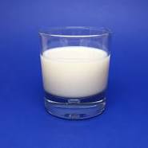

Milk
Milk has been a staple beverage in many homes acros the world for many generations. The got milk campaign really tied together the relationship between milk and moustaches and we really cannot thank them enough for their contributions. Some of the key people who enjoy drinking milk include Shaquille O'Neal, Tiger Woods, and The Homelander.
Here's what you'll need for you beverage
- Glass or cup (optional)
- Cow (fresh)
- A desire to build strong bones
How to make
- The first step is to come to terms with yourself for deciding to actually drink a glass of milk. How could you? There are children watching.
- The next step is to really be sure you actually want to drink this and not some other delicious beverage. You have so many options and you don't have to torture yourself.
- The net step is to get your stupid milk out of the fridge or cow or whatever source you get your milk from. I don't care. You're only being judged for wanting to drink milk in the first place
- Gargle your milk, or however psychopaths enjoy milk.
- live with the consequences to your actions, you milk drinking monster.
return to Home